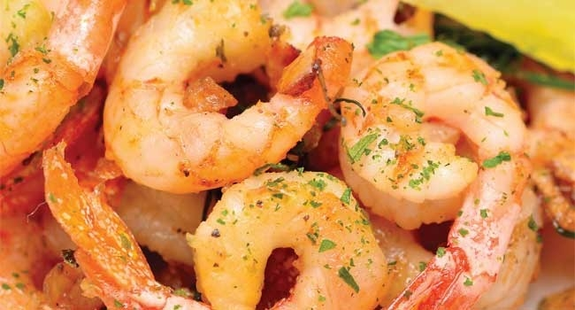

Camarão ao Alho e Óleo

Ingredientes
- 1 Kg de camarão;
- 2 colheres (de sopa) de azeite de oliva;
- 4 dentes de alho;
- 1 colher (de chá) de sal (rasa ou a seu gosto);
- 1 colher (de sopa) de suco de limão;
- Rodelas de limão para servir.
Modo de Preparo
Retire as cabeças e as perninhas dos camarões e lave muito bem (ou compre já limpo).
Nessa receita nós deixamos as cascas e o rabo.
Coloque os camarões limpos em uma tigela, coloque o sal, o limão, 2 dentes de alho amassados e 2 dentes de alho fatiados.
Deixe no tempero por uns 30 minutos ou mais.
Depois coloque o azeite de oliva em uma frigideira, deixe aquecer e vá fritando aos poucos os camarões (na medida do possível retire os alhos para fritar depois).
Não coloque todos os camarões de uma vez para fritar, porque ele junta água, coloque só o suficiente para cobrir o fundo da frigideira.
Deixe apenas até o camarão ficar rosa (cerca de 1 a 2 minutos), depois vire os camarões e deixe ficar rosa do outro lado também. Retire e faça isso com todos os camarões.
Por último coloque os alhos para fritar e espalhe por cima dos camarões fritos.
Sirva os camarões fritos com rodelas de limão.
Ficou delicioso!!!